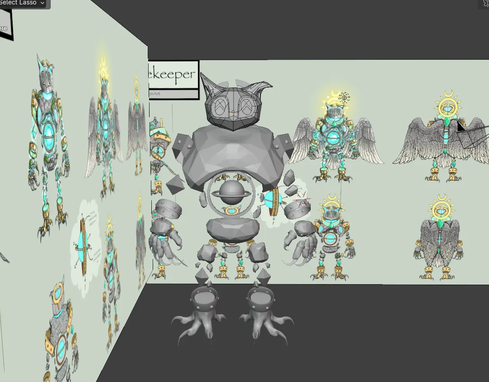
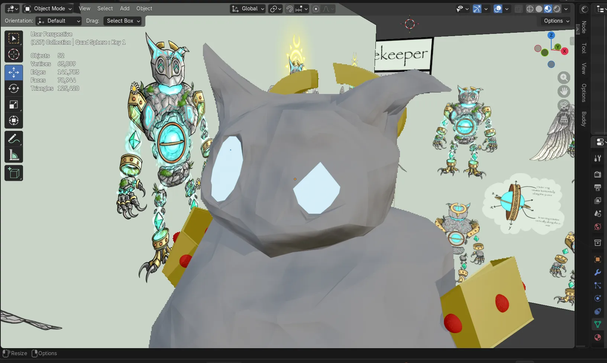
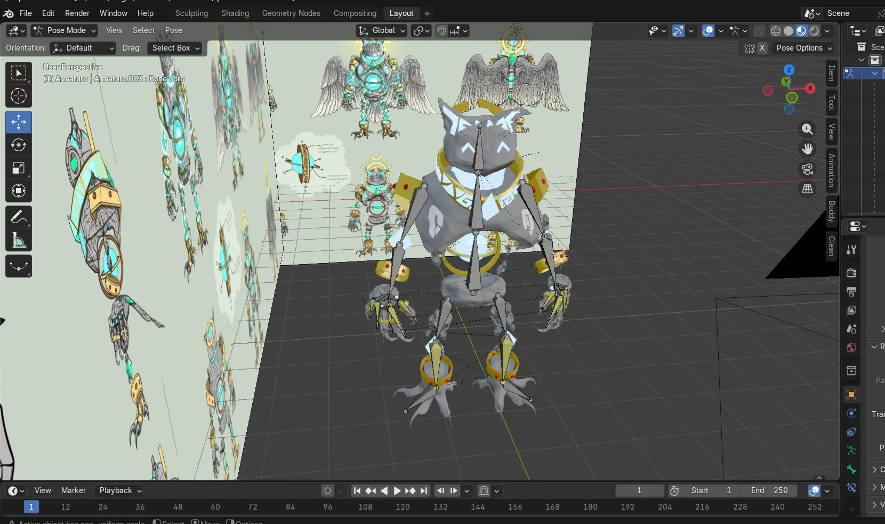
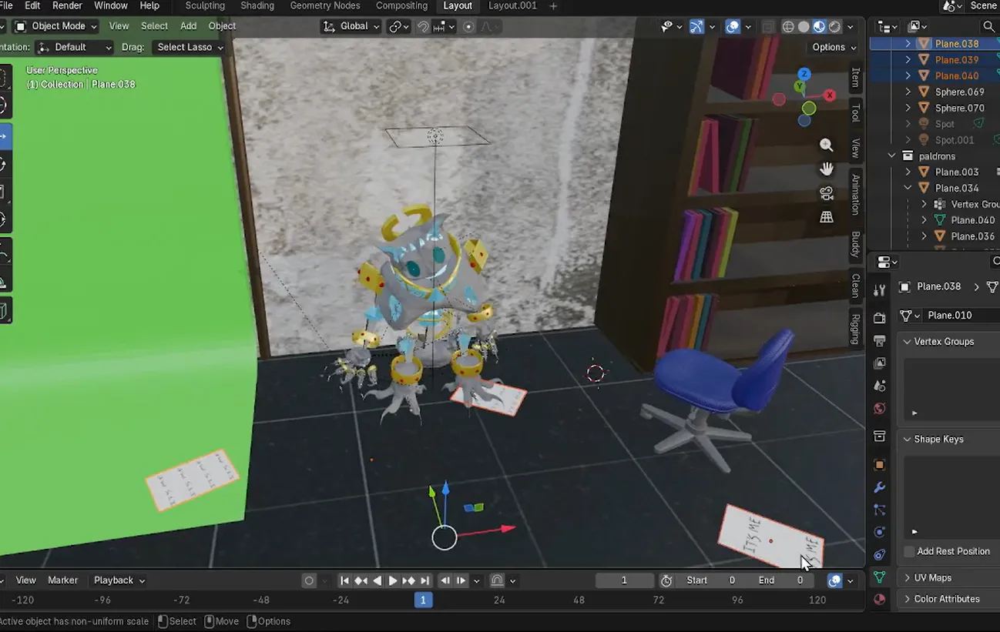

Apollo —
3D Character
My first time learning Blender. Recreated a 3D character from scratch, including modeling, texturing, rigging, and animation.
Process
Modeling: Started with the base mesh, shaping all the body parts using the shape tool with references.

Shapekeys: Had trouble with shape keys on the eyes because I wasn't able to move the eyelids parallel to the face plane. I later found a solution by shapekeying the eye mesh.

Rigging: The rigged model. I would later add proper IK handles for better articulation.

Posing: The final posed model ready for animation.

Progress Videos
I documented the process on YouTube as I learned Blender.
Progress Part 3
Final Animations
Animation 1 — Inspired by Five Nights at Freddy's
Animation 2 — Inspired by Bocchi the Rock
Animation 2 (Alt) — Inspired by Bocchi the Rock
Learnings
- Blender's material and shader editor workflow
- Creating and managing shapekeys for facial expressions
- Manual rigging with custom control bones and pole targets
- Scene setup, lighting, and rendering in Blender
- Using Sheepit for distributed rendering